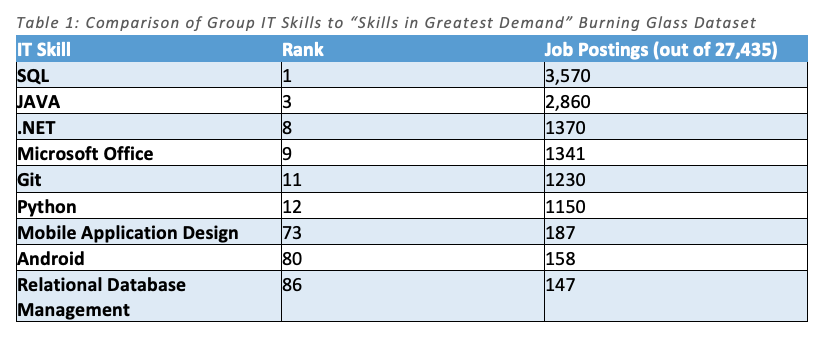
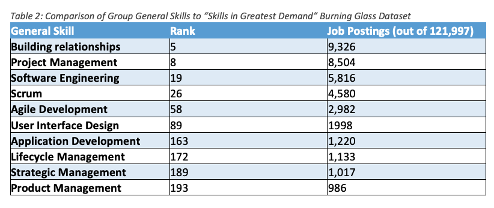
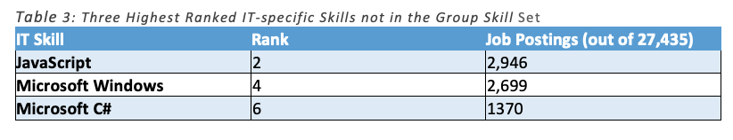
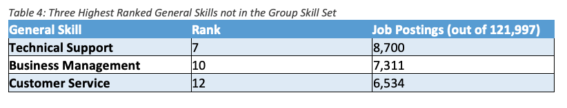

Industry Data
- Grant – Mobile App Developer
- James – Records Management Officer
- Maritza – Solution Architect
- Stephen – Machine Learning Engineer
- William – Python Engineer
The following are the job names for the group members:
“Mobile App Developer” is at position 116, with a 76 job share out of the surveyed total of approximately 120K advertised positions. A related category, “Android Developer” is at position 44, with 171 job postings.
“Machine Learning Engineer” – can’t find an equivalent category in the dataset for this job title.
“Python Engineer” appears at the 83rd position, under the name “Python Developer”, with 106 job postings.
“Solutions Architect” appears in the dataset in the first position, with 987 job postings.
“Records management Officer” is not present in the dataset but “Database Administrator” is, at 30th position and 238 job postings.
The combined required skillset for the group stands as follows:
IT-specific skills (knowledge of): Python, Java, Android and iOS, Git, Reactive Functional programming, REST back-ends, frameworks and best practices, data science, database administration, Office 365, Oracle, SQL, record-keeping, electronic document and records management system, deep learning and AI, full-stack development.
General skills: solution-orientated, lateral thinker, good communicator, work in a team environment, work under pressure, project management, scrum, software analysis and design (or software engineering), agile development, user interface design, life-cycle management, and product management.
Note: Some of the group skills do not appear in the dataset.
Note: Some skills traditionally thought of as “general” do not appear in the dataset; an example is “effective communicator”. This dataset contains skills that would ordinarily be considered IT skills – these were not considered for the table.
 
Note: some skills are universal across the group members – these are general skills. The capacity to work in a team or individually and sound communication skills (written and oral) are good examples of such skills.
The learning plans are similar for the members of the group. The general consensus is that further study at RMIT and experience is important to the ultimate attainment of the ideal job.

Note: some skills are universal across the group members – these are general skills. The capacity to work in a team or individually and sound communication skills (written and oral) are good examples of such skills.
The learning plans are similar for the members of the group. The general consensus is that further study at RMIT and experience is important to the ultimate attainment of the ideal job.
Personal Job Evaluation
William Prebendarcik: After examining the Burning Glass data, my ideal job has not changed. From a personal perspective being able to code Python is quite a sought-after skill; even though machine learning or AI was not mentioned specifically, I would rather not forgo these interests in the interest of acquiring a job.
James Falla: Reviewing the Burning Glass data my ideal job has not changed, my goals remain the same and I will strive to reach the goal of working in a Record’s Management team. The data was useful in highlighting that there is demand for the job, given the record keeping requirements of every business and Government organisation, the job will not be obsolete any time soon.
Grant Nicholas: My ideal job is a requirement for my own business and my initial focus was a Mobile app developer. With the expansion of my knowledge through this course and reviewing the Burning Glass data, my ideal job has now changed to a full stack developer with a database, mobile application flavor.
Maritza Molina: I have thoroughly enjoyed learning about the various aspects of IT and exploring new tools and understanding how they work. This has not changed my view of my ideal job from my original answer. I would still like to pursue a career as a Solution Architect, specialising in HRIS Systems. The knowledge I have gained so far has only emboldened my choice to integrate some of my learnings into my everyday position.
Stephen Lincoln: Seeing as there is very little data about Machine Learning Engineers in this dataset, I get the feeling that it may not be a common or perhaps feasible career goal. I will need to investigate alternate but similar career pathways.